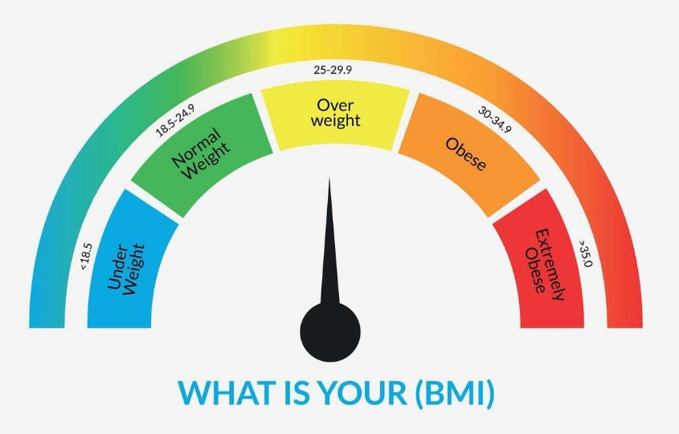

TDFL é um site simples e prático para você descobrir seu IMC em poucos segundos. Aqui você pode calcular se está no peso ideal, entender melhor sua saúde e receber dicas para manter uma vida equilibrada. Nosso objetivo é ajudar você a acompanhar sua evolução e adotar hábitos mais saudáveis de forma fácil, rápida e gratuita. No TDFL , acreditamos que saúde vai além de números: é sobre bem-estar, qualidade de vida e escolhas inteligentes para o futuro.
O que é IMC ? e suas caracteristicas
 O
IMC
é uma ferramenta simples que relaciona peso e altura para estimar se uma pessoa está em uma faixa considerada saudável.
Fazer o cálculo do
IMC
pode ser útil porque:
- Avalia o estado nutricional: ajuda a identificar se você está abaixo do peso, no peso adequado, com sobrepeso ou obesidade.
- Prevenção de doenças: valores muito baixos ou muito altos estão associados a riscos maiores de problemas de saúde, como desnutrição, hipertensão, diabetes tipo 2 e doenças cardiovasculares.
- Acompanhamento médico: profissionais de saúde usam o IMC como um dos critérios para orientar planos alimentares, treinos e tratamentos.
- Controle pessoal: pode ser uma forma rápida de monitorar mudanças no corpo ao longo do tempo, junto com outros indicadores (como circunferência abdominal e percentual de gordura).
| IMC | Classificação |
|---|---|
| menosque 18,5 | abaixo do peso |
| 18,5-24,9 | peso normal |
| 25-29,9 | excesso de peso |
| 30-34,9 | obesidade 1 |
| 35-39,9 | obesidade 2 |
| "40 pra cima" | obesidade 3 |
| isso é considerado para uma pessoa adulta | |
Ele não diferencia massa magra (músculos) de gordura e nem avalia a distribuição de gordura corporal. Por isso, atletas ou pessoas com muita massa muscular podem ter IMC alto sem estarem com excesso de gordura.
Vamos ver hoje como esta sua condição fisica atraves do IMC ?
Quero calcular o Meu IMC

4. Qual é a sua altura?
5. Qual seu peso?
Quer conhecer quem os Desenvolvedores?:
Aperte Aqui
Desenvolvedores e suas ideias:
O TDFL é um projeto acadêmico desenvolvido por David Capulot e Daniel Holanda de Campos, estudantes do curso de Ciência da Computação na Anhanguera de Niterói. Este trabalho foi realizado no âmbito da disciplina de JavaScript, sob a orientação do professor Pedro Henrique da Costa Braga, que contribuiu de forma fundamental para o amadurecimento técnico e acadêmico do projeto.
O site tem como missão aproximar a tecnologia do cuidado com a saúde, proporcionando uma ferramenta prática, intuitiva e acessível para o cálculo do IMC . Nosso propósito vai além de apenas apresentar números: buscamos estimular a reflexão sobre a importância do equilíbrio entre corpo e mente, incentivando escolhas conscientes que promovam bem-estar e qualidade de vida.
Como visão de futuro, almejamos expandir TDFL para além de uma calculadora de IMC . Entre os planos de evolução estão a implementação de novos recursos, como o cálculo da Taxa Metabólica Basal (TMB), o acompanhamento histórico dos dados do usuário, relatórios em PDF, gráficos interativos de evolução corporal e até mesmo sugestões personalizadas de hábitos saudáveis. Acreditamos que, com dedicação e inovação, este projeto pode se transformar em uma plataforma ainda mais completa de apoio à saúde.
Durante o desenvolvimento, valorizamos princípios como a inovação, a aprendizagem contínua, a colaboração e o impacto positivo da tecnologia na sociedade. Mais do que um simples trabalho acadêmico, o TDFL representa nossa capacidade de transformar teoria em prática, criatividade em solução e desafios em conquistas. Este projeto é também um reflexo da nossa paixão pela programação e do desejo de aplicar nossos conhecimentos para criar ferramentas úteis e acessíveis.
A experiência de construir este site fortaleceu não apenas nossas habilidades técnicas, como o uso de HTML e JavaScript , mas também aspectos importantes do trabalho em equipe, da comunicação de ideias e da disciplina necessária para transformar um conceito em realidade. Cada linha de código representa dedicação, aprendizado e a busca por constante evolução.
Agradecemos à Anhanguera de Niterói por nos proporcionar a base acadêmica necessária para este projeto, e em especial ao professor Pedro Henrique da Costa Braga por sua orientação e incentivo. O TDFL é fruto do esforço conjunto entre teoria, prática e paixão pela área de tecnologia, e reflete nosso compromisso com o desenvolvimento acadêmico, profissional e pessoal.